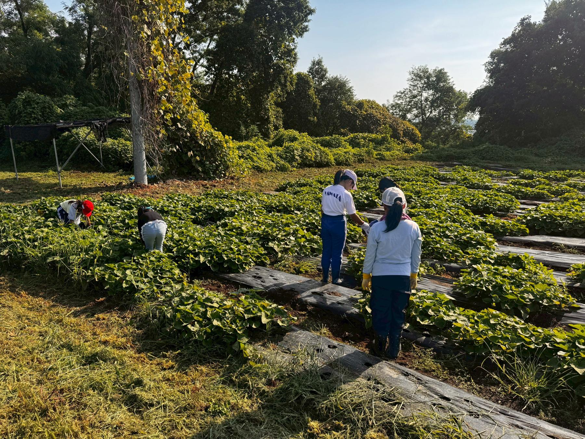

About
私たちについて
特別なことをしなければ支援にならない、のではなく。日々の暮らしの延長にある参加を大切にしています。

一人の想いから、支援の循環を育てる。
一人プロジェクトは、つくること・届けることを通じて、子どもたち、児童養護施設、障害のある方、地域の人たちがゆるやかにつながる居場所と機会をつくる社会貢献プロジェクトです。
誰かを一方的に支えるのではなく、関わる人みんなで循環を育てる。売上の一部は、児童養護施設への支援に還元しています。
最初の実りは、群馬の畑のさつまいもでした。ここから、いくつものプロジェクトへ広げていきます。
大切にしていること
体験やものづくりを通じて、誰もが関われる場をつくること。
売上の一部を、児童養護施設への支援に還元すること。
地域の人・企業・協力者が、自然につながる仕組みを育てること。
関わる人みんなが、循環の一部。
名前にふれると、その人にとっての一人プロジェクトが現れます。
応援が届くところ
運営者情報
- 名称
- 一人プロジェクト（ONE PERSON PROJECT）
- 運営
- 株式会社デナリ
- 代表
- 代表取締役社長 笠井 勇哉
- 所在地
- 〒379-2154 群馬県前橋市天川大島町1203-1 金井ビル2F
- 活動地域
- 群馬県
- 活動内容
- 農業（さつまいも）、干し芋の製造・販売、アパレル、イベント。売上の一部は、児童養護施設への支援に還元しています。
- お問い合わせ
- 「関わる」ページのお問い合わせ